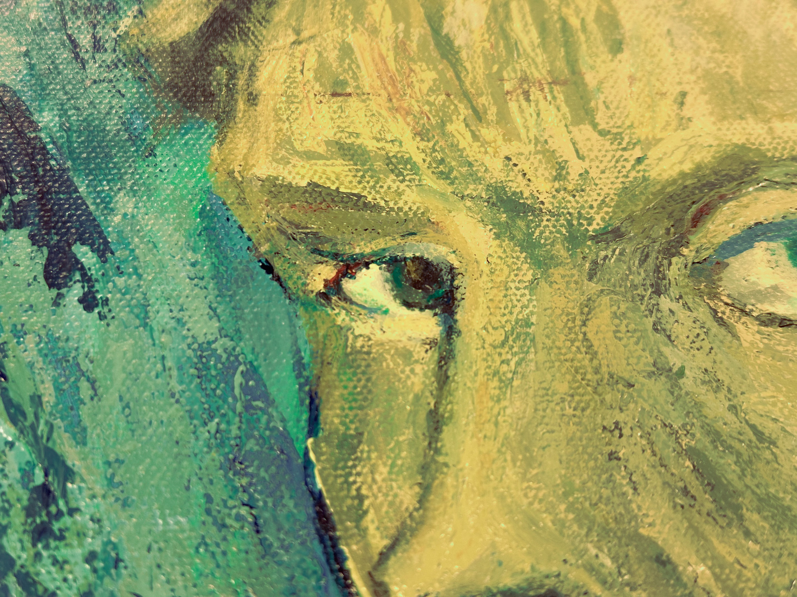
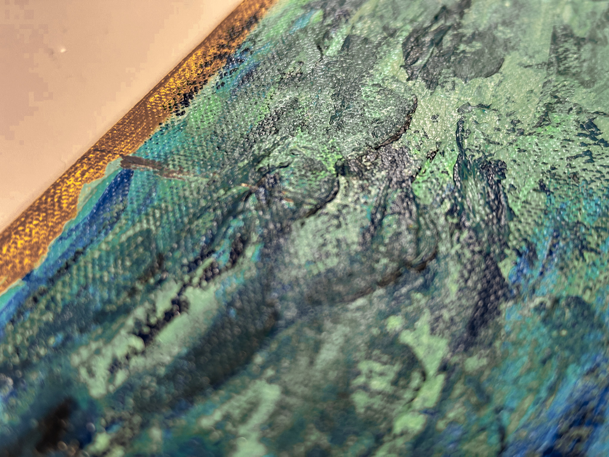

Selvportrett
Dette selvportrettet malte jeg med akryl på lerett. Det er en egen versjon av et Van Gogh-selvportrett, som han malte i Oslo. Jeg brukte PhotoShop til å redigere ansiktet mitt på det, og så malte jeg det på lerett. Maleriet er 40x60cm, og henger i stuen min.



Maleriet har masse tekstur, og jeg er uendelig fornøyd med detaljene og fargene jeg fikk til.
Og så videre... I denne oppgaven jobbet jeg blant annet med Adobe Illustrator, PhotoShop, Blender, AutoCAD og InDesign. Jeg fulgte håndbøkene til Statens Vegvesen og ville lage et så godt veikryss som jeg kunne.
Les hele oppgaven: